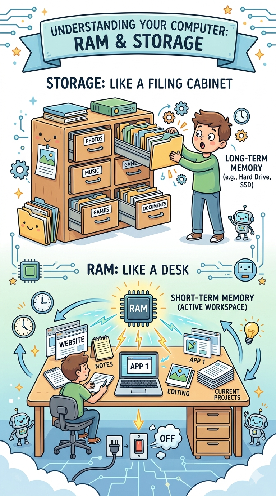
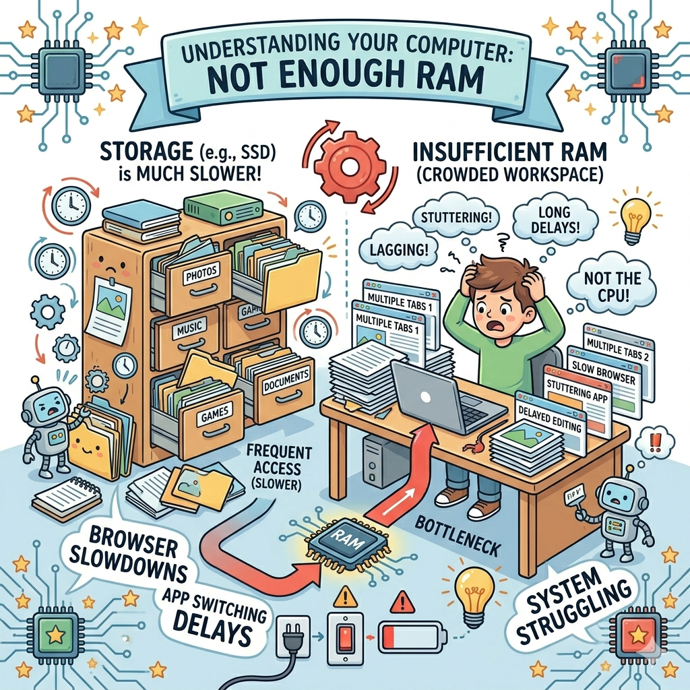
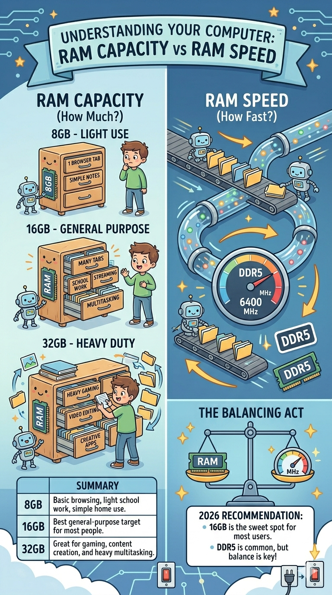
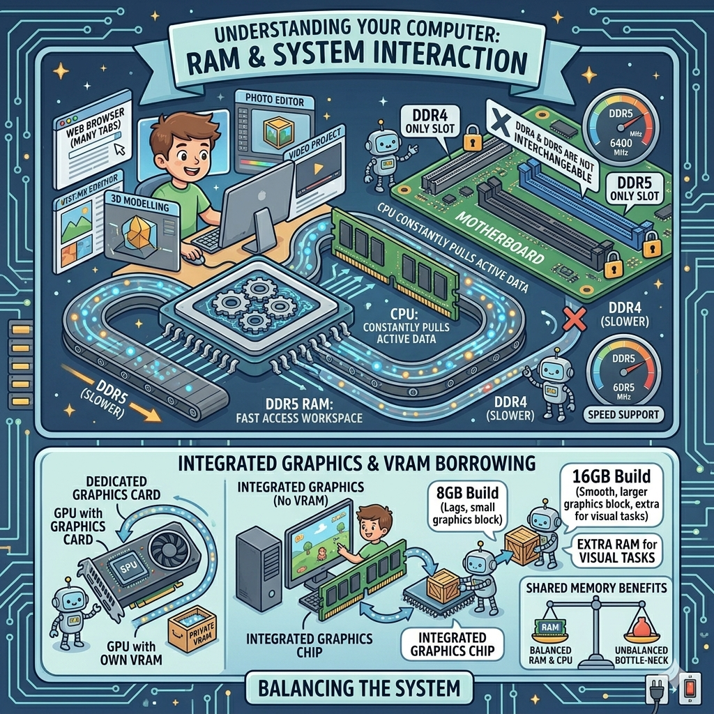
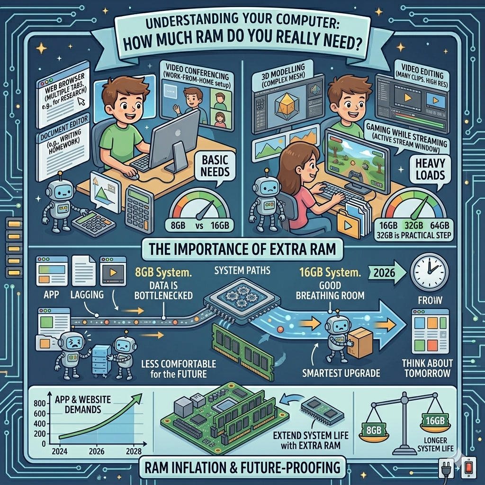

RAM Is Your Computer's Short-Term Memory
The easiest beginner-friendly explanation is this: RAM is like a desk, while storage is like a filing cabinet. The filing cabinet holds everything you own, but the desk is the space where you do active work. If your desk is tiny, it becomes messy and slow to use. If your desk is large, you can spread out your homework, browser tabs, notes, and apps without everything getting in the way.
That is exactly how RAM works. Your operating system, open apps, and active files sit in RAM because it is fast and easy for the computer to reach. When you shut the computer down, RAM clears out. That is why it is called temporary memory rather than long-term storage.

What Happens When You Do Not Have Enough RAM?
When a PC runs low on RAM, it has to fall back more often on storage to hold temporary data. Even with a solid-state drive, storage is much slower than RAM for this kind of live workspace. The result can be stuttering, long app switching delays, browser slowdowns, and a general feeling that the computer is struggling.
This is why people sometimes say, "I only opened a few tabs and now my laptop is lagging." The problem is not always the processor. Sometimes the system simply does not have enough memory for the number of things the user is keeping open. More RAM does not magically make every computer faster, but it often removes a very common bottleneck.

RAM Capacity vs RAM Speed
Two things matter most with memory: capacity and speed. Capacity is how much RAM you have, such as 8GB, 16GB, or 32GB. Speed is how quickly that RAM can move data. For beginners, capacity usually matters more than chasing every last bit of speed. A computer with enough RAM for your tasks will feel better than one with very fast RAM but not enough of it.
In 2026, 8GB is usually the bare minimum for very light use. For most general users, 16GB is the safest recommendation. It gives enough room for web browsing, school work, streaming, and moderate multitasking. If you game heavily, edit videos, use creative apps, or like having a lot open at once, 32GB can be worth it. DDR5 is now the normal choice in many newer desktop platforms, but the best value still comes from balancing capacity, speed, and motherboard compatibility.
- 8GB: basic browsing, light school work, simple home use.
- 16GB: best general-purpose target for most people.
- 32GB: great for gaming, content creation, and heavy multitasking.

How RAM Works with the Rest of the PC
RAM does not work alone. The CPU constantly pulls active data from memory, so system performance depends on how well these parts work together. That is one reason different platforms support different RAM speeds and generations. A motherboard must also support the same type of RAM you buy. DDR4 and DDR5 are not interchangeable.
Another useful beginner point is that integrated graphics often borrow system RAM because they do not have their own VRAM. That means a computer without a dedicated graphics card may benefit more from extra system memory, especially for light games or visual tasks. This is one reason some budget builds feel much better with 16GB than 8GB.

How Much RAM Do You Really Need?
The best RAM amount depends on how you use your computer. For a family PC, school machine, or work-from-home setup, 16GB is the easiest recommendation because it gives good breathing room without pushing the budget too hard. If you mostly type documents, check email, and watch videos, 8GB can still work, but it is less comfortable for the future.
If you are building or buying a new PC in 2026, think about tomorrow as well as today. Extra RAM can extend the useful life of a system because websites, games, and apps tend to demand more over time. If the price difference is reasonable, stepping up from 8GB to 16GB is one of the smartest beginner upgrades you can make. If you are editing large files, gaming while streaming, or using advanced creative tools, 32GB is a practical step rather than an extreme one.
So what does RAM actually do? It keeps your computer responsive while you use it. It is not flashy, but it is one of the most important parts of a smooth everyday experience.